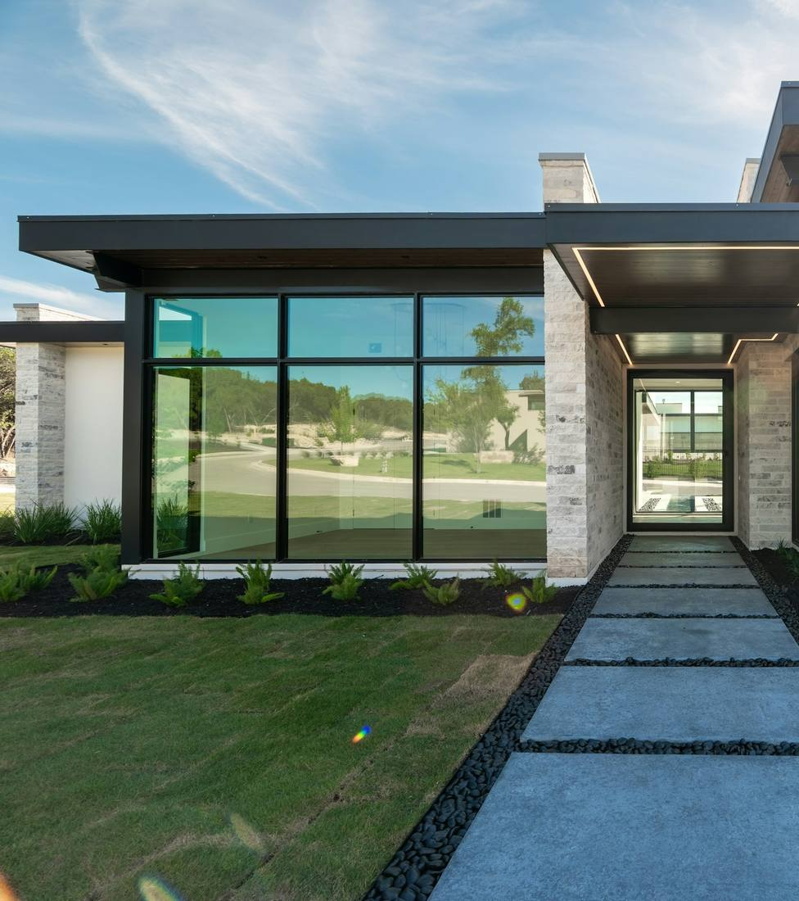
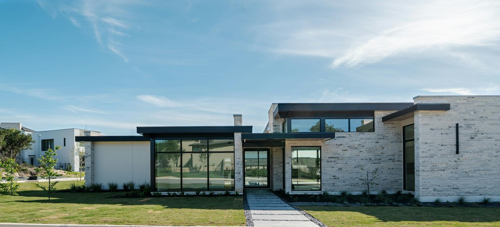
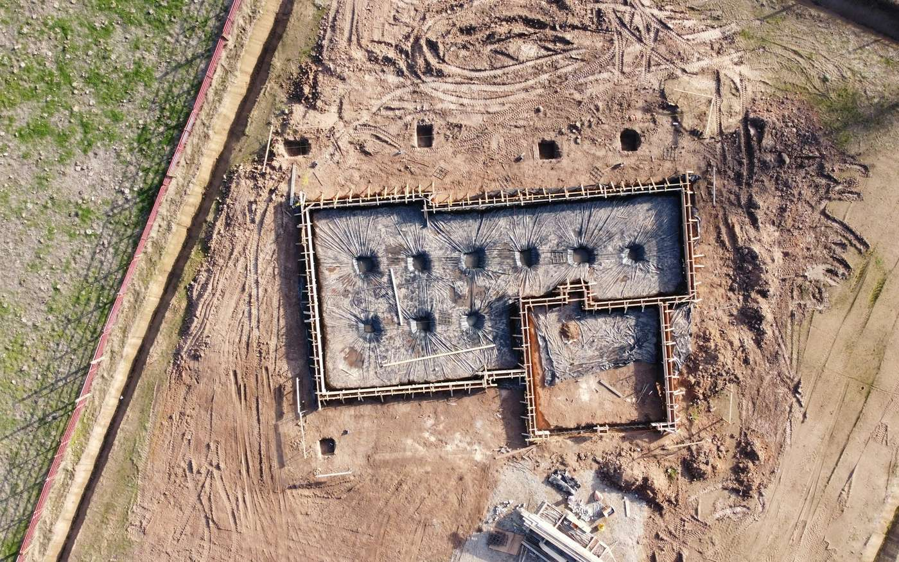
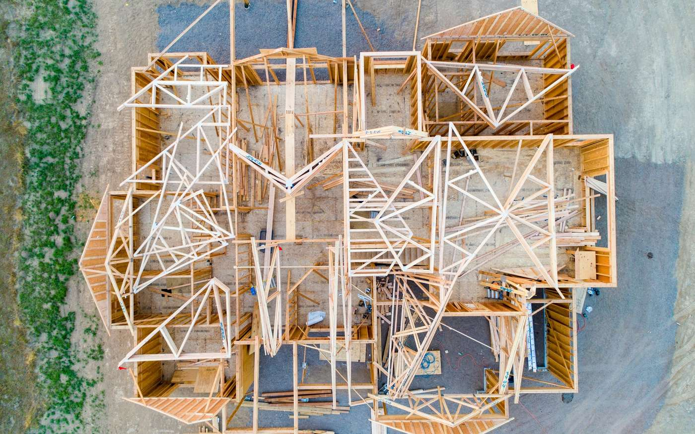
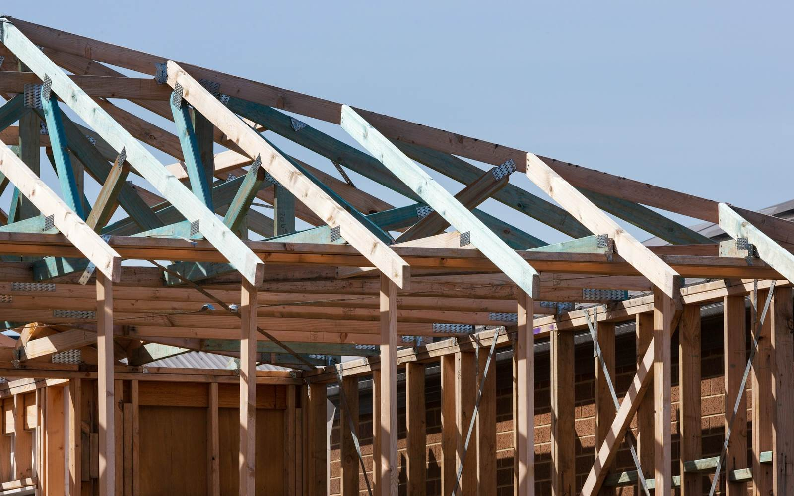
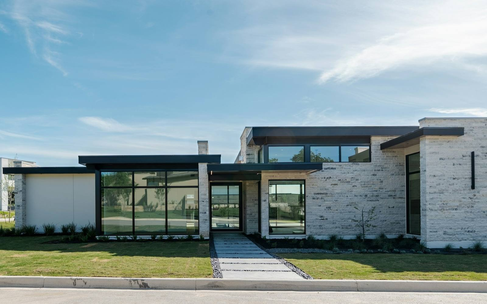

Residence No. 24 · Monograph
The Cahaba Ridge House
A single-level house of sawn limestone and blackened steel, built for the Whitlow family on a wooded ridge. The rooms face a courtyard; stone faces the street.
- Location
- Mountain Brook area
- Type
- New residence, single level
- Size
- Approx. 6,200 sq ft (sample)
- Owners
- The Whitlow family (fictional)
- On site
- Wes, site superintendent (fictional)
- Stage
- Roofing — 3 of 4, in progress
Both links open the existing Greycliff demos from the earlier concept. Everything in them is sample data too.
The house
The brief was short: one level, no stairs to outgrow, and a house that wouldn't need repainting. The plan lines up along a structural grid. The public rooms open north to a courtyard, and the private rooms sit at the quiet east end.
The materials were picked for how they age. The limestone is sawn and left unsealed. The steel is blackened. The white oak stays under the eaves. The upper roof is copper, where it can weather without anyone watching it.
The owners read about the build in a Friday letter, and the builder keeps a dated site journal. The same record feeds both, so the house is described the same way to everyone.

Plan
A hand-drawn ground floor plan on the structural grid. Indicative only; not for construction.
Room key · west to east
- 1–2Screened porch, workshop and two-car garage
- 2–3Living pavilion, glass on both sides, fireplace
- 3–4Entry gallery, running from the street to the courtyard
- 4–5 AKitchen and dining under a clerestory
- 4–5 BStudy, stepped down into the slope
- 5–6Primary suite and bath
- NPlanted courtyard with a single tree
Material schedule
What is going on the house, where it goes, and where each item stands. Status reflects the sample stage (roofing).
| Code | Material | Specification | Location | Finish | Status |
|---|---|---|---|---|---|
| M-01 | Sawn limestone | 4 in. sawn-face veneer; random coursing; recessed lime mortar joints | Street and east walls; entry piers | Unsealed | Installed |
| M-02 | Quarry-face limestone | Split and pitched blocks; dry-laid on compacted base | Courtyard walls, garden steps | Natural split face | Selected |
| M-03 | White oak | Rift-sawn 7 in. plank floors; T&G soffit boards | Entry soffit, floors, study joinery | Hardwax oil, matte | Selected |
| M-04 | Blackened steel | Thermally broken window frames; hot-rolled fascia plate | Window walls, fascia, fireplace | Powder coat outside; wax inside | Installing |
| M-05 | Copper | 16 oz. standing seam, mechanically seamed | Upper roof, scuppers | Mill, left to weather | Selected |
| M-06 | Lime plaster | Smooth lime plaster over block, two coats | Garden wall, west elevation | Unpainted | Installed |
| L-01 | Exterior sconces | Wall-mounted, shielded downlight; two finish samples on site | Entry and courtyard | Owner to choose | Decision due 18 Sep |
Stage timeline
Four stages, drawn to length. Stage photographs are stock images from unrelated sites. They show what each stage looks like, not this house.
-

Illustrative, unrelated site Foundation
12 Jan – 20 Mar 2026 · Complete
The slab steps down eighteen inches at the study, so the east wing sits into the slope. Waterproofing was checked before backfill.
-

Illustrative, unrelated site Framing
23 Mar – 24 Jul 2026 · Complete
Walls went up bay by bay along the grid. Every window opening was checked against the steel shop drawings before sheathing.
-

Illustrative, unrelated site Roofing
3 Aug – 25 Sep 2026 · In progress
Low roofs are watertight. Steel fascia goes up this week; the copper upper roof follows once the fascia is signed off.
-

Projected result, toned stock photograph Finishes
Oct 2026 – Jun 2027 · Planned
Plaster, white oak floors, cabinetry, then fixtures, each with an owner walk-through at the sample stage.
Follow the build
The first two open existing demos from the earlier Greycliff concept.